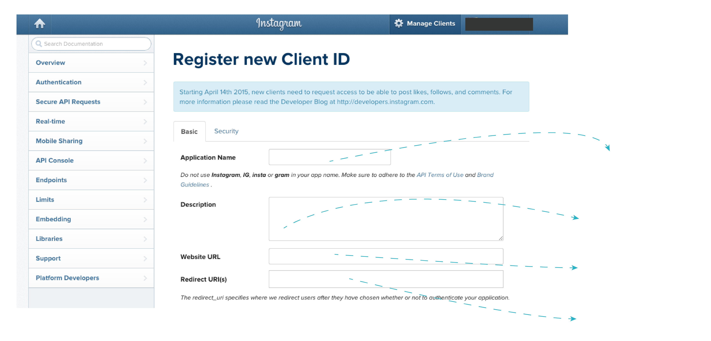
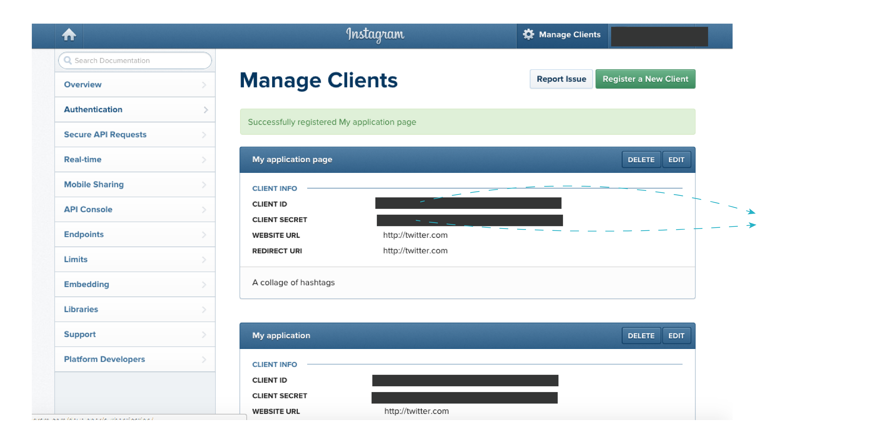

Dashtag sets up an application for you that interacts with Instagram. To allow your Dashtag page to access Instagram, Instagram requires you to register your page and gives you a 'key' that you'll have to input back into your Dashtag page's settings. Below are directions with screenshots to guide you through this process.
1. Log In to Instagram.
2. Visit: https://instagram.com/developer/clients/register/ and fill in your Dashtag page details.
3. Great, your Dashtag page is registered! Copy the Instagram Client ID and enter it into your Dashtag settings page (you do not need the Client Secret).
You're done! If everything was done right your Dashtag page should be able to collect Instagram posts!